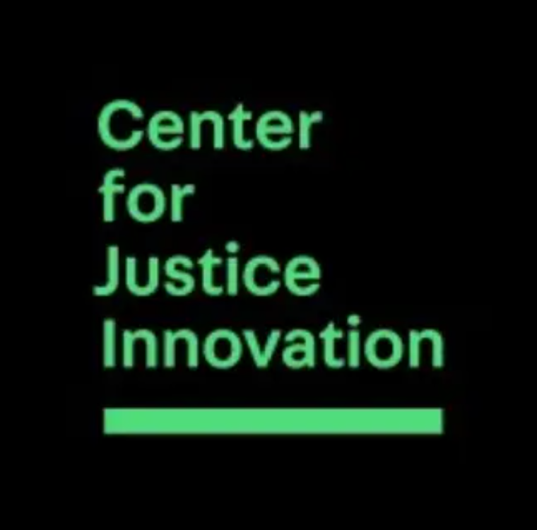
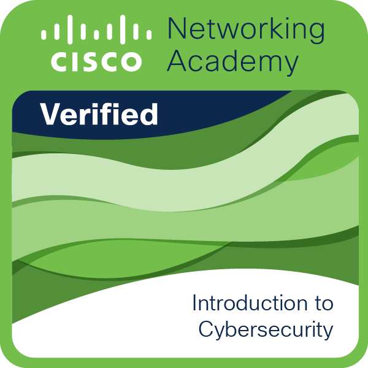
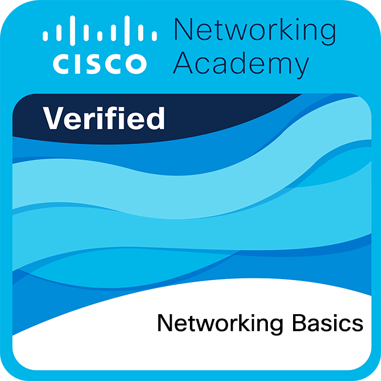
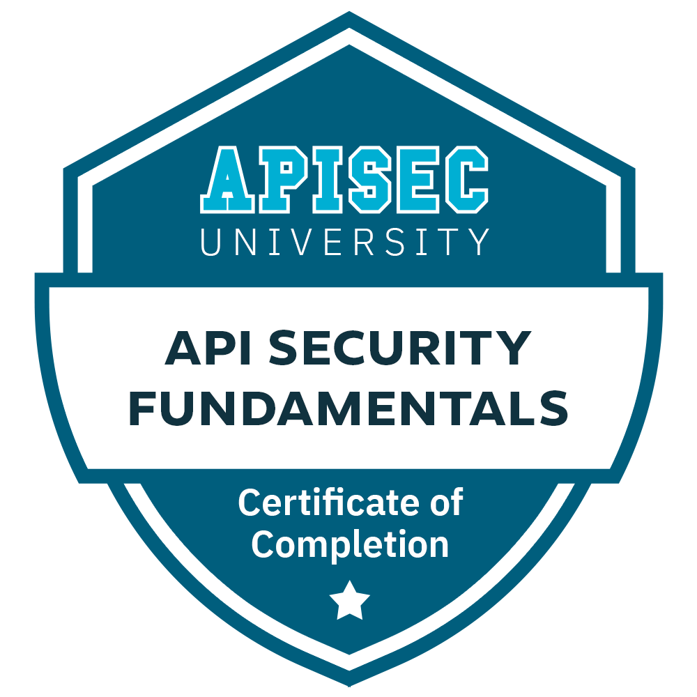
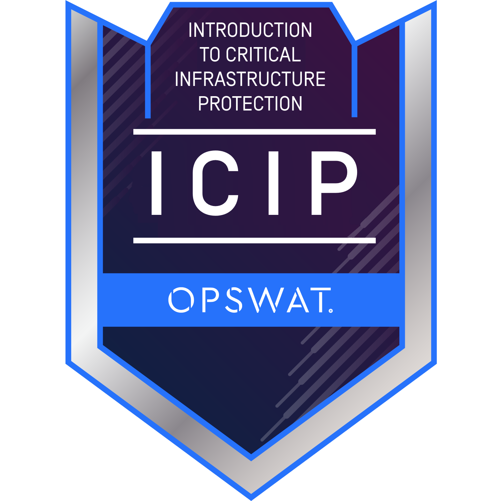
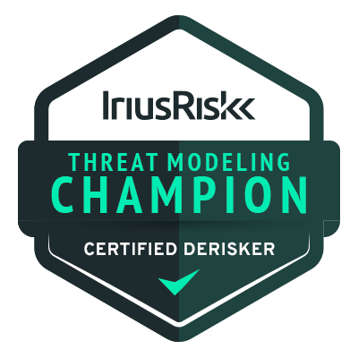
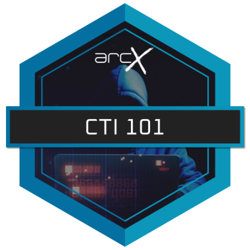
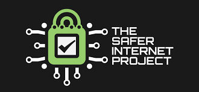
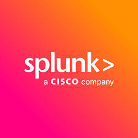
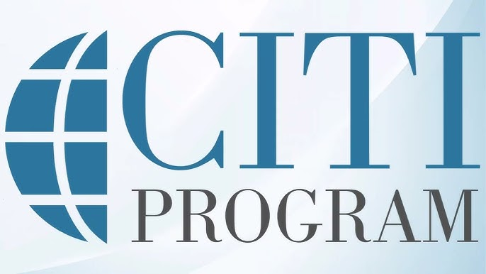

About Me
Fady Fahmy
IT Consultant with 2 years across financial services and nonprofit environments, keeping global infrastructure running for 900+ users — from trading floors to C-suite executives.
Currently going deeper into Azure, IAM security engineering, and automation while holding Active Directory, Intune, Okta, and M365 environments end-to-end.

Work Experience
Gotham Technology Group — Manhattan, NYC
- Administer Active Directory Domain Services (AD DS) and Intune MDM for a global financial services firm across the Americas, EMEA, and APAC, managing OUs, security groups, application groups, distribution lists, GPOs, and storage access provisioning.
- Oversee Microsoft 365 and Entra ID environments, managing Exchange Online, user licensing, mailbox configurations, conditional access policies, and cloud identity operations across a global tenant.
- Manage Okta IAM operations including access permissions, account lifecycle, and authenticator management; analyze activity logs to troubleshoot and resolve authentication issues.
- Oversee the full identity and hardware lifecycle — provisioning, modifying, and deprovisioning user accounts, devices, and peripherals in alignment with onboarding, role changes, and departures.
- Manage AI platform evaluation and deployment, overseeing licensing, SSO integration, add-in configuration, and usage monitoring across multiple vendors.
- Administer virtual desktop environments, managing user sessions, optimizing resources, and resolving connectivity issues to ensure consistent and reliable access.
- Support financial data terminal and portfolio reporting platforms used by traders and analysts, coordinating with vendor support for issue resolution and maintaining uninterrupted market data access.
- Collaborate with security engineers to embed security controls into laptops, applications, and system designs; conduct pre-deployment testing of weekly security patches, distribute approved updates company-wide, and remediate software vulnerable to zero-day exploits.
- Manage enterprise email security operations, investigating flagged emails, enforcing phishing controls, maintaining safe sender lists, whitelisting approved domains, and releasing quarantined messages to ensure reliable mail flow.
- Manage Endpoint Detection and Response (EDR) operations using an enterprise platform, maintaining sensor updates, investigating alerts, and coordinating with the security team for threat remediation.
- Assist in designing and managing phishing simulation campaigns to train users on identifying and reporting threats, strengthening organization-wide security awareness.
- Serve as the first point of contact for white-glove L1 & L2 IT support across in-office and remote users, including C-suite executives and trading floor staff, maintaining high first-contact resolution rates and minimizing downtime.
- Provide hands-on support for conference room A/V environments, ensuring consistent readiness across C-suite meetings, executive presentations, training rooms, and company-wide headquarters events.
- Create and maintain IT knowledge bases documenting recurring issues, runbooks, and SOPs to reduce resolution time, accelerate onboarding of incoming IT staff, and provide guidance for current users.

Technical Support Analyst Nov 2024 – Mar 2025Center for Justice Innovation — Manhattan, NYC
- Administered Active Directory and MDM for 900+ users across 6 locations, managing user accounts, group policies, security groups, and device compliance.
- Managed IT asset lifecycle — imaging, deployment, and decommissioning — for 200+ laptops and mobile devices.
- Provided Level 1 & 2 helpdesk support via Jira for users onsite at headquarters, across 6 locations, and remotely, resolving hardware, software, and connectivity issues.
- Deploy, configure, and decommission laptops, PCs, and mobile devices, including full workstation setup with monitors, docking stations, peripherals, and printers.
- Traveled to branch offices to deploy and configure IT hardware and train staff, streamlining onboarding for new hires.
- Configured and supported conference room A/V systems, and camera setups to enable reliable hybrid collaboration across teams.
Moore Capital Management — Manhattan, NYC
- Provided Level 1 support to the trading floor, minimizing downtime during peak market hours.
- Collaborated with the Senior Security Engineer to implement DLP USB device control solutions, integrating user lifecycle processes with endpoint security measures to protect sensitive trading floor data.
- Built and deployed 100+ user workstations with full desk setups, including monitors, docking stations, and desktop VoIP phones.
- Resolved end user issues via the ticketing system, delivering timely technical support to 300+ employees.
- Configured and maintained Zoom conference rooms enterprise-wide, including Logitech camera setup and integration.
- Developed a comprehensive company-wide application inventory, driving timely updates, batch processing, and decommissioning of obsolete applications.
NYPD — Manhattan, NYC
- Operated NYPD software systems to gather, process, and share information daily.
- Assisted officers with arrest processing documents and accurate reports for criminal cases.
- Completed training on the NYC criminal justice system, legal procedures, and operations.
- Certified in First Aid, CPR, and AED.
Projects
AD & Linux Home Lab
ActiveSimulated enterprise network on a personal laptop — Windows Server 2017 domain controller with Active Directory DS, Group Policy, and DNS, joined by Windows 10 and Linux clients. Integrated Okta with MFA for centralized identity management and used Kali Linux for security testing across VirtualBox and VMware VMs.
Letter Frequency Decryption
ActivePython tool that cracks substitution ciphers using letter frequency analysis. Computes the relative frequency of each letter in ciphertext and maps them to standard English distributions to reveal plaintext — a practical application of the cryptanalysis techniques from my coursework.
Portfolio Website
ActiveThis portfolio — built from scratch with HTML, CSS, and vanilla JavaScript. Includes a Content Security Policy, email obfuscation, scroll-driven fade animations, IntersectionObserver active nav tracking, a typing animation, and full accessibility improvements.
Education
John Jay College of Criminal Justice
Bachelor of Science — Computer Science & Information Security
- Computer Security & Forensics, Network Security & Forensics, Cryptography & Cryptanalysis
- Computer Networking, Capstone Cybersecurity I & II, Databases & SQL
- Object-Oriented Programming, Advanced Data Structures & Algorithms
NYC City College of Technology
Associate of Science — Computer Systems Technology
- Dean's List — Spring 2022
- CUNY Upskilling Network+ Prep Course — December 2022
- Faculty-mentored research — CITI Researcher Certified
Skills
Identity & Access Management Expert
Endpoint & Device Management Expert
Cloud & Infrastructure Proficient
Security Tools & Platforms Proficient
Security Operations Proficient
Ticketing & ITSM Proficient
Scripting & Automation Familiar
A/V & Conferencing Proficient
Password Managers Proficient
Operating Systems Proficient
Certifications









